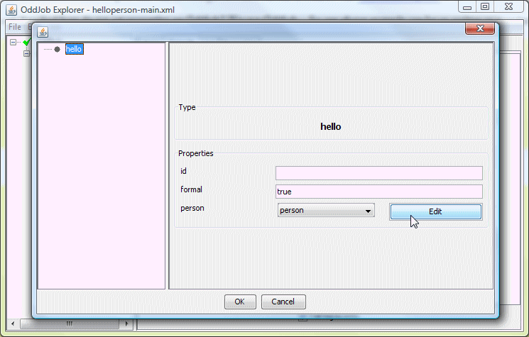
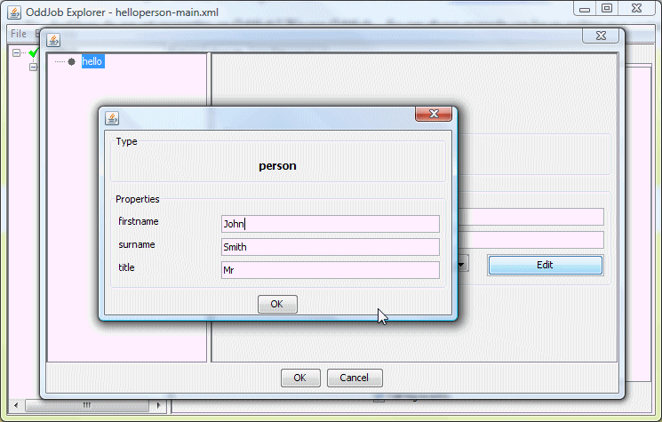
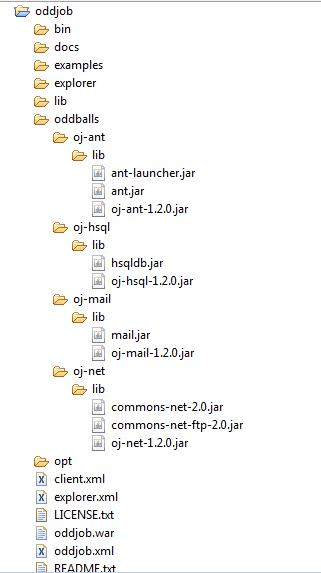

Oddjob's extension points.
In this section we take a look at
the many options for making our classes available to Oddjob. We'll
learn how to tell Oddjob to use nice short element names like
<copy>
and we'll learn how to write an Oddball which is an Oddjob plugin.
In the first instance Oddjob finds its classes...
-classpath option..jar in the lib directory..jar in the opt/lib directory.opt/classes directory.We can prove this by copying an example class:
$ mkdir opt/classes/org $ mkdir opt/classes/org/oddjob $ mkdir opt/classes/org/oddjob/devguide $ cp examples/classes/org/oddjob/devguide/HelloWorldJob.class opt/classes/org/oddjob/devguide $ java -jar run-oddjob.jar -f examples/devguide/hello1.xml Hello World!
How can we use our own XML elements instead of boring old
<bean> elements?
Provide an implementation of an
ArooaDescriptorFactory.
When Oddjob starts it has one of these factory things that scans the classpath
for any number of META-INF/arooa.xml XML files which it
expects to be able to parse to create another factory. It joins all these little
factories together and creates a big factory (For those that like design patterns
this is of course the classic Composite Pattern).
There's an example of one of these XML files in the examples directory called
helloperson-arooa.xml. It's for our HelloPersonJob example from the
previous section and it looks like this.
{@oddjob.xml.file examples/devguide/helloperson-arooa.xml}
Now as Arooa is a Java Bean Framework, it probably comes as no surprise to
learn that this is Java Bean implementation of
an ArooaDescriptorFactory and it's parsed with... Arooa of course. See
<arooa:descriptor>
in the reference for more on how to configure this bean.
If we copy the descriptor:
$ cp examples/devguide/helloperson-arooa.xml examples/classes/META-INF/arooa.xml
We can modify our original configuration to become:
{@oddjob.xml.file examples/devguide/helloperson2.xml}And run it:
$ java -jar run-oddjob.jar -cp examples/classes -f examples/devguide/helloperson2.xml Hello Mr Smith.
Once a component has been given an element to class mapping, Oddjob Designer will automatically create a form for it:
And for person too:
Ok, not pretty - but it can make a pleasant change from XML.
A nested Oddjob job within Oddjob can also be configured with it's own class loader and descriptor factory.
{@oddjob.xml.file examples/devguide/helloperson-main.xml}This does the same as the above. No classpath required.
$ java -jar run-oddjob.jar -f examples/devguide/helloperson-main.xml Hello Mr Smith.
The difference is that a new class loader is created by Oddjob and used
when processing the descriptor factory to
load the HelloPersonJob class.
Oddballs are Oddjob's plugin architecture.
Oddballs extends the above features of Oddjob modularity by defining a recognised directory structure for deploying a set of job classes and their dependent libraries.
An Oddball is any directory in Oddjob's oddballs directory.
Oddballs find their classes...
.jar in the lib directory.classes directory.(Familiar to those who know Servlets. But there's no
web.xml, instead...)
When the Oddball loads it scans this classpath
for any number of META-INF/arooa.xml XML file from which it
creates it's ArooaDescriptorFactory.
Pre-Installed Oddballs
Oddjob comes pre-installed with some Oddballs for Ant tasks, mail, FTP, and an HSQL database server. Here's a screenshot of a deployed Oddjob and it's Oddballs:
Developing an Oddball
In the deployed Oddballs above, the META-INF/arooa.xml
file is combined with Oddjob
job beans in a jar for neat deployment. While developing an Oddball
ensuring the project directory also adheres to the Oddball layout
allows for testing without any deployment:
Launching with Odballs not In The Oddballs Directory
Here's an eclipse launch configuration used to Launch Oddjob with all it's Oddballs:
{@oddjob.xml.file examples/devguide/Main.launch.xml}The -op argument stands for 'Oddball Path'. Notice that
the Spring Oddball (oj-spring) points to a 'target'
directory. This is because it is built with Maven. Fortunately
a Maven Install creates a directory structure that is Oddball conformant too!
The Spring Oddball
The Spring Oddball is a separate download. It's available from Sourceforge
here. To deploy the Spring Oddball simply
download the binary and unzip it into the Oddjob's
oddballs directory, and restart Oddjob.
Un-Installing Oddballs
To un-install an Oddball, simply move it out of the oddballs
directory, and restart Oddjob.
Using Oddball Jars In Your Own App Classpath
If you want to use an Oddball jar with your own application classpath,
you can can just drop it in with your own libs but the arooa.xml
will not be automatically loaded. To load it we can use use a
ClassPathDescriptorFactory.html. Here's an example of using the
And Oddball jars without it being an Oddball.
Explicitly Loading Oddballs For a Nested Oddjob
An Oddball or many Oddballs can be explicitly loaded using the <oddballs> type {@oddjob.xml.file examples/devguide/myapp2-main.xml}
Extending an Oddballs Classpath
If you want to extend an Oddballs classpath you can do so by using a <url-class-loader> and refering to the class loader of the component as the parent class loader.
{@oddjob.xml.file examples/devguide/echo-ant-classpath.xml}The author was hoping to show the running of a custom task using
our extended classpath - However, although our task can be found by Ant, as,
if you run this example you will see, Ant's Taskdef doesn't use an Ant's
projects own core classloader! Hopefully though you get the point. Oddjob's
build process (oj-assembly in the source distribution) uses
this technique to ensure that the ant-junit.jar is available during the
build.